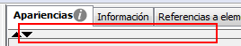

By default there is just one single block of resources, but we can add more, in order to change the appearence of the element (player, object or whatever) depending on the game conditions.
To display the table of blocks, you have to deploy by clicking on the bar: By clicking again on the top of the date it hides again..
The table of resources' blocks uses the standard buttons of the tables, which are detailed under Tables.
When there is more than one resources' block, each of them has its own conditions. The particular conditions of a block can be edited through the "Conditions" buttons. During the game, at every moment the first block of resources will be chosen (depending on the order they have in the table) if it meet the conditions.